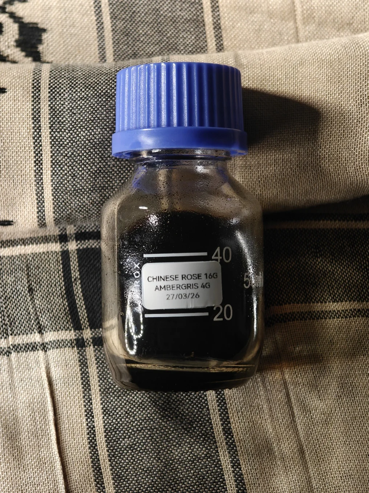

White Rose x Ambergris
In many of my early blends, a slow releasing and subtle rosa rugosa was used, a Chinese yellow rose from Pingyin - a white variant of this rose oil was used; exchanging the honeyed fruits facets for a crisp watery fruits.
As opposed to other roses, this white rose is delicate, tea-like, and with a fresh crisp edge - I think this pairs synergistically with the oceanic and clean Irish coast ambergris; a genuine picnic by the sea.
Not much can be said about this particular maceration, it simply it slowly ground ambergris which preserves the naturally occurring aromatic lipids and mixing it with a filtered, cleaned, and room temperature stable white rose oil.
The allowance of being liquid at room temperature means that the oil stays in a consistent liquid phase without changing it's density that gives enough room for the ambergris grounds to interpolate with the rose oil for a more cohesive maceration.
Fresh, crisp, fruity, animalic, floral, and warm - it's a complete aromatic spectrum as is, regal and standout in its entirety. A silky smooth material, newly formed and greater than the sum of its products